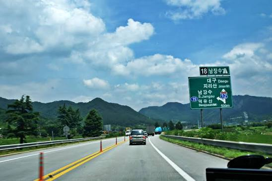
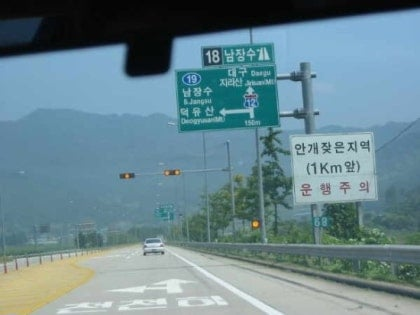
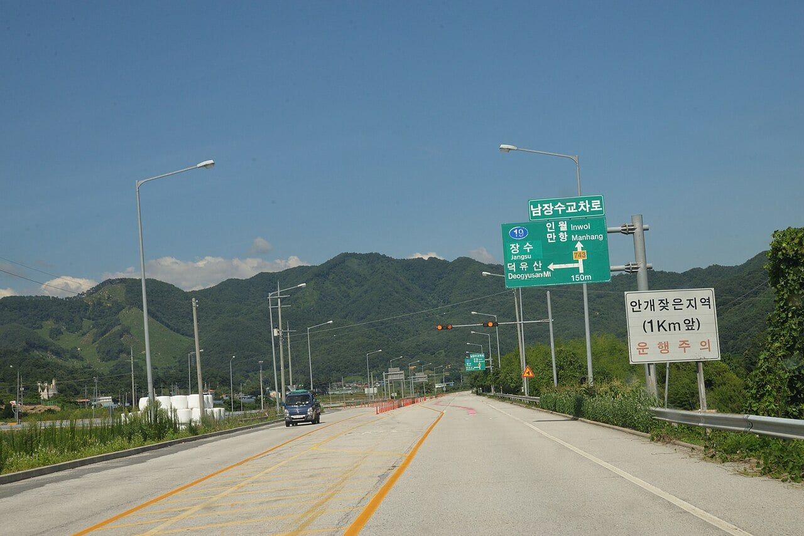

뭔 고속도로에서 좌회전을 해서 빠져나가야함 ㅅㅂ......



뭔 고속도로에서 좌회전을 해서 빠져나가야함 ㅅㅂ......
영동고속도로에는 이목정 사거리라는 곳이 있었음
뭐... 21세기 와서 최후의 고속도로 비보호 좌회전 있던 곳이면 저기가 맞긴 한데.... 영동, 동해, 88, 남해고속도로는 지금도 일부 구간이 일반도로로 격하되어 사용중임
고속도로인에 좌회전도 놀라운데 비보호요????????
고속도로에 신호등이 있으면 그것도 놀라울듯
그건 들어서 아는데 비보호 좌회전은 시발 어떤 미친새끼 머리에서 나오는건가 싶다
신호가 없으면 다 비보호니까
아무리 1차로짜리라해도 100짜리 차선 비보호면 ㅋㅋ
저기가 100까지는 아니고 80짜리 도로이긴 했음
고속도로에서 유턴하는거 본 적 없으면 말을 마세요
허미시펄ㅋㅋㅋ
남해고속도로에 아직 남아있다는건 뭔 개피셜이냐?
저런 옛날 2차선 고속도로 일부 구간이 일반도로로 격하되어 여전히 사용중이라고 당연히 확포장 완료된 지금 구간하고는 별개로 떨어진 도로고
하동군 진교면쪽 구간에 남아있는 곳이 있는데 도로명 자체가 아예 구고속도로임
88이 저러지 않았나
ㅇㅇ 저기 88올림픽고속도로 남장수 분기점 있는 곳이었음
전에 칠곡에서 올라오다 보니까 휴게소랑 고속도로 출구가 같이 있더라
요즘 휴게소에다가 하이패스 톨게이트 같이 박아놓은 곳들이 몇 있음
진천휴게소 삼성하이패스 나들목, 이천쌀휴게소 신둔하이패스 나들목, 고삼호수휴게소에 고삼하이패스 나들목 등등...
휴계소에 고속도로 출구있는곳 꽤 됨
당장 경부선 분기점중 하나인 회덕에 있는 신탄진 휴게소도 신탄진톨게이트말고 옆으로 나갈수있는 하이패스 톨게이트 하나가 더생김ㅋㅋㅋㅋㅋㅋㅋㅋㅋㅋ
예전엔 경부고속도로 금강휴게소가 유명했지
여기는 거기다 상하행 통합이라 티켓으로 요금 내던 시절에는 악용하는 사람들도 있었다는 카더라
인제가 그렇고 음성도 그랬던거같은데
지금은 고속도로에 평면교차인 곳 없지않나?
ㅇㅇ 지금은 없음 지금 저기는 일반도로로 격하되어 사용중임(이름은 그대로 남장수교차로)
동마산IC도 ㅈ같이생겼을건데
개선한다더니 했나몰라
그... 좌회전 해서 들어가다 역주행하기 딱 좋게 생겨먹은 거기?
안개도 잦으면 까딱하다 뒤지기 십상이겠네
저기 고속도로가 아니고 국도인데...?
옛날엔 고속도로였다
지금 광주대구고속도로 생기기전엔 저게 고속도로였음. 88고속도로.
휴게소도 좌회전으로 들어갔었음 ㅋㅋㅋ
고속도로에서 유턴도 가능했음
영종도 해안도로에서 공항고속도로 탈려고 주유소 지나자마자 좌회전하는 그곳도 뭔가 좀 그런데
유로트럭인줄
1차선에 중앙분리대도 없는 88국도임
뭐 어찌보면 역사의 산물 아니겠습니까 ? ㅎㅎ
여기 말고 어디지 갑자기 속도 줄이고 좌홰전하는데 또 있는데 ㅋㅋㅋㅋ
옛날엔 많았었음 동해고속도로하고 영동고속도로 새말 동쪽은 죄다 비보호 평면교차였으니까
대구광주고속도로는 진짜 두 도시의 관계만큼 ㄹㅇ 개좆박은 유명한 고속도로임
https://www.youtube.com/watch?v=UiINU8LnXhg
이거구나
88고속도로 ㅋㅋ
톨비 반값이었는데 ㅆㅂ 그 도로는 국도보다 못한 도로 ㅋ
하루에 무조건 한명 이상 죽어나가는 악명높은 고속도로
지금은 2차선으로 시원하게 뚫려있음
강원도 어딘가에 그지같은곳이 하나 있지
톨게이트 빠져나가자마자 신호등 있는 사거리..
여기때메 강원도에서 서울올때 1시간은 더 정체되는듯
대구 어디쪽에도있던데
갑자기 좌/우로 다른 고속도로로바뀜
북대군가 남대군가 말하는거같은데 유도선 1km 전부터 있는데 그거 몰라서 잘못들어가면 핸들 뺏어야 하는거 아임?
지방은 일차선도 고속도로임?
옛날은 저런식이었음.... 대부분은 21세기 들어서면서 사라졌는데 저 남장수 교차로만은 2015년까지 고속도로 교차로 기능을 하고 있었거든.... 옛날 왕복 2차로 고속도로 중 확포장 및 이설이 가장 늦게 된게 88올림픽 고속도로였거든(지금의 광주대구선)
추월점선 존재했던 야만의 88고속도로
88은 진짜 전설이다
88에서 덤프가 저속으로 길막하고 있으면 목숨걸고 추월하고 그랬었지
유일했던 고속도로 평면교차로ㅋㅋ
원주분기점 50km 제한 얼탱이가 없던데
ㄹㅇ ㅅㅂ 근데 거기 말고 그런데 몇 군데 더 있음
88고속도로는 전설이다 진짜
ㅇㄱ ㅈㅉㅇㅇ?